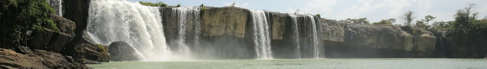

Ban Me coffee
Bold robusta, drip-filtered or as salted coffee.

A city on red basalt highlands, known as the coffee capital of Vietnam. From here explore the mighty Dray Nur falls, Lak Lake, Ede and M'Nong villages and the Central Highlands gong culture – a UNESCO intangible heritage.
Loading weather...
Tap a month to see if it's a good time to go
Usually every other March: coffee streets, elephant races and gong music.
Check whether it runs that year before planning.
Wild sunflowers line the Highlands roads, Prenn pass and Langbiang.
Sunny and cool – ideal for a motorbike ride.
Lunar-calendar festivals move each year – check the official dates before you go.
Bold robusta, drip-filtered or as salted coffee.
Red rice noodles with fish cake, quail eggs and field crab – a breakfast staple.
Illustrative photo: A red-broth noodle bowlFree-range chicken grilled over charcoal with e-leaf salt.
Illustrative photo: Bamboo-tube riceRed-soil fruit, best from May to August.
Red noodles with fish cake and quail eggs
Đường Hai Bà Trưng, TP Buôn Ma Thuột Updated 09/2026 ReportRobusta and salted coffee in a longhouse setting
Đường Lê Duẩn, TP Buôn Ma Thuột Updated 09/2026 ReportGrilled chicken, bamboo rice, e-leaf salt
Đường Y Wang, TP Buôn Ma Thuột Updated 09/2026 ReportBanh can, avocados, coffee and pepper to take home
Chợ trung tâm Buôn Ma Thuột Updated 09/2026 ReportBanh can and banh xeo for breakfast
Đường Hùng Vương, TP Buôn Ma Thuột Updated 09/2026 ReportPork-rib noodle soup
Đường Lê Hồng Phong, TP Buôn Ma Thuột Updated 09/2026 ReportLang fish hotpot and grilled fish
Hồ Lắk Updated 09/2026 ReportBamboo rice, bitter eggplant soup, grilled meat
Buôn Kô Siêr, TP Buôn Ma Thuột Updated 09/2026 ReportIndicative prices per person. Tap an address to open Google Maps for opening hours and the latest reviews.
Ede longhouse architecture and coffee from around the world.
The mighty "husband and wife" falls on the Serepok river.
Paddle a dugout canoe and sleep in an M'Nong longhouse.
Gong performances and rice wine by the fire.
Suggested for this destination and month (pick a start date in the Itinerary section to change the month). Tick items to remember what you have packed.
Spotted a changed price, opening time or closed shop? Report
400k–1.2M / night
Near the square, cafés and market.
300k–700k / night
Ede longhouses right inside the city.
700k–2M / night
Lakeside resorts near Jun village.
Buon Ma Thuot Airport (BMV) is ~8 km from the centre. Sleeper buses take ~8 h from Saigon and ~4–5 h from Da Lat or Nha Trang.
| From Hanoi |
|
|---|---|
| From Da Nang |
|
| From Ho Chi Minh City |
|
Estimated travel time; one-way budget fare per person – for reference. The option in bold is our suggestion.
Indicative room rates for 2 people per night; higher at Tet, holidays and weekends. Việt Travel earns no commission from booking sites.
Việt Travel · Dak Lak · Best time: November – March
Red noodle soup for breakfast and a Ban Me coffee.
World Coffee Museum and Trung Nguyen coffee village.
Stroll the central square; grilled chicken with bamboo rice.
A short night stroll, then back to rest
Drive ~30 min to Dray Nur and Dray Sap falls.
Visit a coffee farm and see how beans are roasted.
Gong music and rice wine at Ko Sier village.
A short night stroll, then back to rest
Head to Lak Lake (~1 h) and paddle a dugout canoe.
M'Nong Jun village and Bao Dai's palace.
Sleep in a longhouse; grilled lang fish.
A short night stroll, then back to rest
End of tour: check out, shop for local specialties and head home.
Breakfast at your stay (often included in the room rate)
Buon Don suspension bridges and old stilt houses.
Elephant conservation centre (choose a walking tour).
Stroll the night market or food street for dinner
Back in the city for lang fish hotpot.
A short night stroll, then back to rest
End of tour: check out, shop for local specialties and head home.
Breakfast at a busy local eatery near your stay
Buon Ma Thuot market for coffee, pepper and macadamias.
A simple rice lunch near the sights
The old colonial prison and Khai Doan pagoda.
Dinner near your stay – pick a place busy with locals
Fly out or continue to Da Lat or Nha Trang.
End of tour: check out, shop for local specialties and head home.
Breakdown: budget
Breakdown: comfort
Breakdown: budget
Breakdown: comfort
Breakdown: budget
Breakdown: comfort
Excludes flights/transport to Buon Ma Thuot. Prices are indicative and vary by season.
Entrance fees & opening hours for sights in Buon Ma Thuot
Visiting more than one place? Combine Buon Ma Thuot with other destinations.
Share your experience
Reader photos
No photos yet – be the first to share a moment in Buon Ma Thuot!
Share your photo